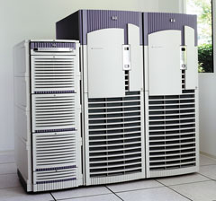
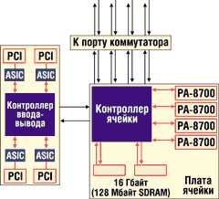
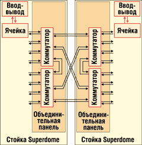

Андрей Борзенко
В последние годы объемы продаж UNIX-серверов стремительно растут, что вызвано быстрым развитием Интернета и Web-предприятий. Наступившая эра Интернета обещает новые возможности, новые доходы, новую конкурентоспособность. Однако для достижения этих преимуществ от компьютеров требуется беспрецедентный уровень производительности, надежности, безопасности, высокая степень готовности и управляемости. Высокопроизводительные масштабируемые компьютеры, оборудованные 64-разрядными процессорами и большим объемом памяти, используются как платформа для электронной коммерции.
В числе наиболее производительных и гибких систем этого класса развиваемое корпорацией Hewlett-Packard (http://www.hp.ru) серверное решение HP 9000 Superdome. Это готовая вычислительная платформа на базе ОС UNIX, соответствующая бизнес-модели "лицом к рынку" (hp always on). Инициатива always on, ориентированная на повышение готовности и надежности корпоративных решений, предусматривает обязательную предварительную экспертизу систем, тестирование и настройку до установки, современные модели ценообразования, основанные на принципе аренды, систему модернизации техники с расчетом на будущее, а также специально созданные службы поддержки и дополнительных услуг. Разработчики подчеркивают, что Superdome - не просто сервер, а инфраструктура для новой идеологии и новой модели бизнеса времен Интернета.
|  | Сервер Superdome.
|
Новые системы созданы в расчете на поставщиков услуг, крупные Интернет-компании и другие предприятия, работающие с большими объемами данных. Решения, подобные Superdome, позволят компаниям преобразовывать функционирующие ИТ-системы так же, как они сегодня преобразуют свои производственные структуры. Новый сервер сводит к минимуму время простоя оборудования благодаря большому числу резервируемых компонентов, широкому выбору модулей, заменяемых в оперативном режиме, и рекордному для UNIX-платформы числу встроенных средств коррекции ошибок.
Платформа поддерживает системные конфигурации, включающие от 2 до 64 процессоров. Система, базирующаяся на ячейках и модульной архитектуре, может быть сконфигурирована либо как один большой SMP (Symmetrical Multi Processing) сервер, либо как несколько независимых разделов (partitions). Напомним, что раздел в данном случае - это по сути самостоятельный компьютер с собственными процессорами и памятью.
Базовые микропроцессоры
Еще в 1983 г. в Hewlett-Packard было принято решение начать проект создания семейства процессоров PA-RISC (Precision Architecture Reduced Instruction Set Computing). Первый компьютер на базе PA-RISC был представлен корпорацией в 1985 г. Схемотехнически новый кристалл был построен на базе транзисторно-транзисторной логики (ТТЛ) и синхронизировался тактовой частотой 8 МГц. За прошедшие годы друг друга сменили 16 различных технологических решений, выполненных с использованием биполярных и комплиментарных МОП-структур. Заметим, что первый продукт PA-RISC был реализован на шести платах с использованием микросхем средней степени интеграции. Первый процессор на СБИС требовал только восьми соответствующих микросхем. А все компоненты современного процессора PA-RISC, включая кэш-память большого объема, выполнены на одном кристалле.
Со временем Hewlett-Packard внесла два значительных изменения в архитектуру процессоров PA-RISC. Первоначальный дизайн продуктов был основан на спецификации PA-RISC 1.0, но уже в начале 1990-х гг. была разработана следующая версия спецификации - PA-RISC 1.1. Основные ее отличия состояли в увеличении размера страницы с 2 до 4 Кбайт, добавлении 16 регистров с плавающей точкой и повышении эффективности внутренних прерываний. Отметим, что после этих изменений система сохранила обратную совместимость: программы, написанные для машин PA-RISC 1.0, могли успешно работать на системах, отвечающих новой спецификации.
В 1996 г. Hewlett-Packard представила спецификацию PA-RISC 2.0, которая впервые стала использоваться в семействе процессоров PA-8х00. Главным нововведением в PA-RISC 2.0 стали 64-разрядная целочисленная арифметика и 64-разрядная адресация (хотя 32-разрядный режим был сохранен для обеспечения обратной совместимости). В версии 2.0 разработчики добавили страницы переменного размера, ввели несколько новых операций с плавающей точкой и ряд других усовершенствований. При этом все новые процессоры PA-RISC сохранили полную двоичную совместимость со своими предшественниками.
Начало новой эры микропроцессоров PA-RISC ознаменовал 64-разрядный процессор PA-8000, впервые анонсированный в марте 1995 г. Промышленный выпуск этих кристаллов был начат в 1996 г. Значительное повышение производительности обеспечил новый член семейства PA-8x00 - процессор PA-8500, объявленный в 1998 г. На кристалле размерами 21,3х22 мм при соблюдении проектных норм 0,25 мкм размещалось 140 млн транзисторов; тактовые частоты кристалла составили 360, 440 и 500 МГц. Кардинальным изменением в РА-8500 по сравнению с РА-8200 стал переход от использования внешней кэш-памяти к кэшу, интегрированному на основном кристалле. В РА-8500 кэш-память команд имеет емкость 512 Кбайт, а кэш-память данных - 1 Мбайт.
В РА-8500 - впервые в семействе PA-8x00 - применялась 4-канальная частично-ассоциативная кэш-память. Сегодня разработчики высокопроизводительных микропроцессоров часто предпочитают частично-ассоциативную кэш-память памяти прямого отображения. Первая обеспечивает более высокую вероятность нахождения данных в кэше по сравнению с памятью прямого отображения той же емкости (однако следует иметь в виду, что при прямом отображении время доступа может быть ниже).
Ввиду больших временных задержек, которые могут возникнуть при неверном предсказании переходов в случае внеочередного спекулятивного исполнения команд, разработчики кристалла уделили этому вопросу самое пристальное внимание. В PA-8500 есть интересное усовершенствование, позволяющее объединить преимущества динамического и статического предсказания переходов. В том же году корпорация представила новый процессор - PA-8600, промышленный выпуск которого начался в 2000 г. Как заявляет Hewlett-Packard, процессор PA-8600 можно применять в тех же системах, что и PA-8500, однако он позволит разрабатывать более отказоустойчивые серверы. Для ускорения доступа к кэш-памяти в PA-8600 применяются новые алгоритмы, а сам кэш использует технологию обнаружения и исправления ошибок ECC (Error Correcting Code).
В сентябре 2001 г. корпорация сообщила о выпуске нового 64-разрядного процессора PA-8700, который предназначен для работы на частотах 650 и 750 МГц. Процессор производится по КМОП-технологии с соблюдением проектных норм 0,18 мкм, использованием технологии "кремний на изоляторе" (Silicon-On-Insulator, SOI) и семи слоев медных межсоединений. Это позволило разместить на кристалле 2,25 Мбайт кэш-памяти (0,75 Мбайт для данных и 1,5 Мбайт для команд) - больше, чем на любом другом процессоре, и на 50% больше, чем на PA-8600. Процессор поддерживает 44-разрядные физические адреса, что позволяет обращаться к физической памяти объемом до 16 Тбайт. Кроме того, в новом процессоре удалось понизить напряжение питания и в результате уменьшить потребляемую мощность и теплоотдачу при работе на высоких частотах. Благодаря меньшим размерам стало возможным повышение рабочей частоты. Как утверждают представители корпорации, процессор выполняет примерно 3,2 млрд операций в секунду. По предварительным данным, далее в планах HP значится процессор PA-8800 с тактовой частотой не менее 1 ГГц, причем на одном кристалле будет совмещено два процессора (как у IBM Power4). Затем должен появиться PA-8900 с еще более высокой частотой (возможно, 1,2-1,3 ГГц).
Серверы Superdome конструировались в расчете на несколько будущих поколений процессоров, относящихся как к семейству HP PA-RISC 8x00, так и к IPF (Itanium Processor Family). Поддержка двойных систем позволяет клиентам сохранить существующие инфраструктуры и системы, имея при этом возможность самостоятельно выбирать время для перехода на Intel-архитектуру.
Модули первых версий Itanium в Superdome устанавливать не будут, речь идет о следующей модели семейства IPF - McKinley. При этом, например, PA-8800 будет вставляться в точно такой же разъем, что и McKinley, но потребует иного встроенного микропрограммного ПО. McKinley состоит из 220 млн транзисторов и работает на 128-разрядной системной шине с частотой 400 МГц и производительностью 6,4 Гбайт/с. Количество блоков целочисленных операций в этом кристалле увеличено до шести. McKinley будет работать на тактовых частотах до 1 ГГц и оборудоваться более эффективной кэш-памятью третьего уровня размером до 4 Мбайт (выполненной на самом кристалле). Заметим, что архитектура Itanium включает в себя такие средства повышения надежности, как система расширенного самоконтроля EMCA (Enhanced Machine Check Architecture), обеспечивающая обнаружение, коррекцию и протоколирование ошибок, а также поддержку обработки кода ECC и контроля четности.
В 2003 г. выйдет версия кристалла Intel Madison, выполненная с соблюдением проектных норм 0,13 мкм. Эти процессоры, рассчитанные на 8- и 16-процессорные серверы, будут оснащены 6 Мбайт кэш-памяти третьего уровня. Объем кэш-памяти процессоров, рассчитанных на менее мощные серверы, будет составлять от 3 до 6 Мбайт. В том же 2003 г. появятся кристаллы Deerfield, предназначенные в основном для двухпроцессорных серверов среднего уровня. Они будут базироваться на архитектуре McKinley и Madison, но отличаться меньшим энергопотреблением и тепловыделением. После появления McKinley серверы Superdome превратятся в платформу сразу для трех операционных систем: HP-UX 11i, с которой Superdome работает и сейчас, а также Microsoft Windows NT и 64-разрядного варианта Linux. Такая программная универсальность достигается благодаря разбиению системы на разделы.
Отметим, что Hewlett-Packard, поддерживающая платформу Intel Itanium, будет, по словам представителей корпорации, поставлять решения на базе PA-RISC по крайней мере вплоть до модели PA-8900.
Системная архитектура
При построении многопроцессорных систем стандартом уже давно стала архитектура неоднородного доступа к памяти с когерентной кэш-памятью ccNUMA (cache coherent Non Uniform Memory Architecture). Основной элемент инфраструктуры этих систем - коммутатор. Так, в системной архитектуре Superdome можно выделить ячейку (cell), объединительную панель с неблокирующимся коммутатором (crossbar backplane) и подсистему ввода-вывода на базе шин PCI.
Ячейка - основной элемент архитектуры, конструктивно реализованный в виде платы. Коммутатор (который в данном случае называется контроллером ячейки) связывает между собой процессоры, оперативную память, подсистему ввода-вывода, а также обеспечивает соединение блоков между собой, так как содержит специальные порты для межсоединений (рис. 1). Вообще говоря, ячейка представляет собой SMP-систему, содержащую до 4 процессоров и 16 Гбайт основной памяти, использующей микросхемы 128 Мбит SDRAM (табл. 1). Каждый из этих процессоров имеет в контроллере ячейки свой собственный выделенный порт с пропускной способностью 1,6 Гбайт/с. Это предотвращает конфликты между процессорами за доступ к порту коммутатора. Средства ввода-вывода в ячейке отсутствуют, поскольку они по отношению к ней являются внешними и подсоединяются через порт ввода-вывода контроллера. Оперативная память имеет емкость от 2 до 16 Гбайт и наращивается порциями по 2 Гбайт. Вся память разделяется между двумя банками (512 Мбайт DIMM), каждый из которых имеет по одному порту в контроллере ячейки с пропускной способностью, равной 1,6 Гбайт/с. Контроллер ячейки имеет также порт к неблокирующемуся коммутатору с пропускной способностью 6,4 Гбайт/с.
|  | Рис. 1. Основной элемент архитектуры Superdome.
|
Таблица 1. Иерархия системной памяти
| Уровень | Количество ячеек | Максималь-ное число процессоров | Максимальный объем памяти, Гбайт | Совокупная пропускная способность, Гбайт/с | Пропускная способность на одну ячейку, Гбайт/с |
| Ячейка | 1 | 4 | 16 | 8,0 | - |
| Ячейка-ячейка | 4 | 16 | 64 | 16,0 | 4,0 |
| Два коммутатора | 8 | 32 | 128 | 32,0 | 4,0 |
| Четыре коммутатора | 16 | 64 | 256 | 64,0 | 4,0 |
Ячейку можно заменять без перезагрузки компьютера. Восемь таких ячеек объединяются в одной стойке ("кабинете"), а две стойки уже составляют максимальную конфигурацию с 64 процессорами. Далее масштабирование может идти только за счет кластеризации.
Объединительная панель содержит два связанных между собой 8-портовых коммутатора, которые обеспечивают неблокируемое соединение между восемью ячейками и ассоциируемой с ними памятью и контроллерами ввода-вывода (рис. 2). Две объединительные панели могут связываться с помощью гибкого кабеля. Технология HyperFlex позволяет объединить четыре Superdome в одну мощную группу с общим числом процессоров, равным 256.
|  | Рис. 2. Межсоединения в Superdome.
|
Подсистема ввода-вывода в Superdome вынесена из платы ячейки и располагается на отдельных модулях. Каждый модуль ввода-вывода содержит микросхему контроллера ввода-вывода, связанную с ячейкой через канал с пропускной способностью 1,6 Гбайт/с. На любом из модулей подсистемы ввода-вывода содержится 12 PCI-слотов. Из них восемь (2х слоты) обеспечивают пропускную способность 256 Мбайт/с, а четыре (4х слоты) - 530 Мбайт/с. Любой модуль может поддерживать основную плату ввода-вывода, требующуюся для каждого независимого раздела. Дополнительная стойка ввода-вывода (I/O Expansion Cabinet) добавляет 48 дополнительных слотов PCI в 32-процессорной конфигурации (максимум 96 слотов на 8 ячеек). Отметим, что в максимальной конфигурации общий объем памяти может достигать 256 Гбайт, а число слотов PCI - 192. Примеры конфигураций ввода-вывода приведены в табл. 2.
Таблица 2. Примеры конфигураций подсистем ввода-вывода
| Число ячеек | Максимальное число процессоров | Максимальное число модулей ввода-вывода | Число слотов PCI | Общая пропускная способность, Гбайт/с | Требуется ли I/O Expansion Cabinet |
| 4 | 16 | 4 | 48 | 8,0 | Нет |
| 8 | 32 | 8 | 96 | 16,0 | Да |
| 16 | 64 | 16 | 192 | 32,0 | Да |
Отказоустойчивость
Серверы Superdome оснащены аппаратными и программными средствами, повышающими отказоустойчивость и позволяющими создавать системы высокой готовности (High Availability, HA). Прежде всего это избыточные компоненты, предлагаемые по схеме N+1, с возможностью горячей замены. Сюда входят вентиляторы шкафов и модулей ввода-вывода, а также блоки питания. Возможна замена плат PCI в оперативном режиме, планируется обеспечить такую же замену для плат ячеек. Оперативная память и основные пути данных в Superdome защищены кодами ECC, а данные ввода-вывода контролируются по четности. Предусмотрены также развитые средства мониторинга и диагностики, в том числе с использованием Service Management Station, контролирующей состояние заказных ASIC-микросхем и другие параметры.
Упомянутая возможность разделять сервер на несколько разделов, в каждом из которых может функционировать собственная ОС, считается "изюминкой" Superdome. Разбиение на независимые разделы помогает выполнять различные задачи одновременно, причем без малейшего риска, так как разделы полностью изолированы друг от друга. В этих серверах предусмотрено два типа разделов: аппаратные (nPartition) и программные (virtual, или vPartition). Минимальной единицей физически изолированных разделов является ячейка. В разных разделах могут работать разные операционные системы. Каждому виртуальному разделу приписываются определенные ресурсы, в том числе не менее одного диска (для загрузки), не менее одного процессора и сетевая плата. Ресурсы раздела включают в себя и оперативную память. Всего на базе Superdome можно организовать до 64 виртуальных разделов. Виртуальное разделение позволяет автоматически переназначать имеющиеся вычислительные мощности на решение необходимых задач. На одной системе можно запускать несколько десятков копий ОС, которые будут работать независимо. В случае виртуального разделения сервер может, например, выполнять функции Web-сервера и сервера печати. Задания на печать поступают нерегулярно, и в промежутках между ними вычислительные мощности совершенно не востребованы. Соответственно, балансировка нагрузки в этом случае позволит использовать сервер эффективнее, передавая задания из одного раздела в другой. Для обеспечения функционирования виртуальных разделов над аппаратурой введен дополнительный уровень - монитор виртуальных разделов.
ОС HP UX11i - важный компонент платформы Superdome. Она реализует функции поддержки виртуальных разделов и замены узлов сервера без отключения питания. Цена ОС зависит от количества процессоров в системе.
Для управления разделенными средами в Superdome можно воспользоваться пакетом HP OpenView. С его помощью система оперативно выделяет вычислительные мощности по требованию. Деление на независимые системы дает возможность консолидировать разнородные "тяжелые" приложения на одном сервере и может стать инструментом для ASP-компаний, сдающих приложения в аренду.
Дисковые подсистемы
Общая емкость дискового пространства в Superdome может составлять десятки терабайт. Как и в серверах класса V, здесь предусмотрены исключительно внешние жесткие диски. В качестве внешних подсистем обычно используются дисковые массивы HP SureStore E Disk Array XP512. Данные подсистемы, используемые в Интернет-инфраструктуре непрерывного функционирования, могут быть предварительно интегрированы с Superdome - при этом отпадает необходимость в запланированных остановках систем для резервного копирования или модернизации.
Основные особенности данного массива таковы.
- Архитектура класса "пять девяток" (доступность 99,999%, что соответствует времени простоя системы не более 5 мин в год), с возможностью горячей замены дисков, плат, контроллеров, источников питания и вентиляторов, а также горячего обновления внутреннего ПО без остановки системы.
- Высокая доступность данных, достигаемая дублированием активных и избыточных элементов, зеркалированием кэш-памяти, дублированием активных шин для данных, команд и интерфейсов, обеспечением двух различных путей доступа к каждому диску.
- Широкий набор средств управления массивом, обеспечивающих управление виртуальными дисками, доступом, ресурсами, локальными и удаленными копиями, совместным использованием данных, производительностью, кэш-памятью и т. п.
- Поддержка множества серверных платформ как при соединении в рамках архитектуры выделенных устройств хранения (Storage Area Network, SAN), так и при прямом соединении, поддержка множества интерфейсов.
- Возможность наращивания общей емкости устройства от 72 Гбайт до 93 Тбайт.
- Возможность использования высоконадежных дисковых механизмов различной емкости с различным временем доступа.
- Аппаратная поддержка уровней RAID.
HP SureStore E Disk Array XP512 предусматривает установку от 4 до 512 дисковых накопителей емкостью 18, 73 и 181 Гбайт со скоростью вращения шпинделя 15, 10 и 7,2 тыс. об./мин соответственно. Средство оптимизации позволяет перемещать часто используемые данные с недорогих накопителей большой емкости на меньшие по объему, но более быстрые диски. К тому же допускается автоматическая разгрузка наиболее часто используемого накопителя в массиве и, самое главное, может выполняться преобразование данных между RAID 5 (оптимизация по емкости) и RAID 1 (оптимизация по производительности). Поддерживаются интерфейсы подсистем: Fibre Channel, SCSI и ESCON. В качестве ОС могут использоваться HP-UX, Microsoft Windows NT/2000, Sun Solaris, IBM AIX, IBM System 370/390 и т. д. Предлагается работа массива по схеме "24х7х365", т. е. круглосуточно все дни в году.
Конфигурации Superdome
Система Superdome имеет три различные конфигурации (табл. 3). В соответствии с бизнес-моделью always on в каждом из трех случаев клиент получает услуги по консультированию, управлению и обучению, а также по конфигурированию готовой к работе, полностью укомплектованной и настроенной системы.
Таблица 3. Конфигурации сервера HP9000 Superdome для информационного центра
| Варианты конфигурации | 16-процессорный сервер | 32-процессорный сервер | 64-процессорный сервер |
| Число процессоров (SMP) | 2-16 | 4-32 | 8-64 |
| Число 4-процессорных ячеек | 2-4 | 4-8 | 8-16 |
| Объем ОЗУ, Гбайт (DIMM 512 Мбайт) | 4-64 | 8-128 | 16-256 |
| Общее число 12-слотовых корзин с горячей заменой для плат ввода-вывода | 4 | 4 (или 8 при использовании стойки расширения ввода-вывода) | 8 (или 16 при использовании стойки расширения ввода-вывода) |
| Общее число слотов ввода-вывода PCI с возможностью горячей замены | 48 (32 с частотой 33 МГц и 16 с частотой 66 МГц) | 48 слотов (или 96 при использовании стойки расширения ввода-вывода: 64 с частотой 33 МГц и 32 с частотой 66 МГц) | 96 слотов (или 192 при использовании стойки расширения ввода-вывода: 128 с частотой 33 МГц и 64 с частотой 66 МГц) |
| Избыточные (N + 1) блоки питания с возможностью горячей замены | 4 | 6 | 12 |
| Вентиляторы плат ввода-вывода | 6 | 6 | 12 |
| Избыточные (N + 1) радиаторы или вентиляторы с возможностью горячей замены | 4 | 4 | 8 |
| Максимальное число аппаратных разделов (nPartitions) | 4 | 4 (или 8 при использовании стойки расширения ввода-вывода) | 8 (или 16 при использовании стойки расширения ввода-вывода) |
| Общая пропускная способность коммутатора (пиковая), Гбайт/с | 12,8 | 25,6 | 51,2 |
| Пропускная способность шины между контроллером ячейки и подсистемой ввода-вывода (пиковая), Гбайт/с | 1,2 | 1,2 | 1,2 |
| Пропускная способность подсистемы ввода-вывода (пиковая), Гбайт/с | 4,8 | 9,6 | 19,2 |
| Пропускная способность подсистемы памяти (пиковая), Гбайт/с | 12,8 | 25,6 | 51,2 |
| Операционная система | HP-UX 11i | HP-UX 11i | HP-UX 11i |
| Размеры ВхШхГ, мм | 1960х762х1220 | 1960х762х1220 | 1960х1524х1220 |
| Масса, кг | 500 | 598 | 1196 |
Все решения Superdome включают базовую конфигурацию, которая существенно уменьшает количество возможных проблем для заказчика. Эта конфигурация оказывается достаточной для компаний, чьи приложения не предъявляют слишком жестких требований к уровню доступности, или для тех, кто уже имеет опыт управления своей ИТ-средой.
Базовая конфигурация предполагает предоставление следующих услуг.
- Непрерывное управление всеми этапами проекта с использованием проверенных методологий и инструментальных средств, гарантирующих осуществление проекта в указанные сроки с требуемым качеством.
- Консалтинговые услуги для детальной разработки архитектуры.
- Оценку профессионализма и специальную программу обучения ИТ-специалистов.
- Подготовку требований к месту и условиям установки оборудования.
- Интеграцию и тестирование оборудования на заводе Hewlett-Packard, с гарантией правильности конфигурации и готовности к запуску сразу после доставки.
- Доступ к ресурсам центра технической поддержки клиентов, работающего в режиме 24 ч 7 дней в неделю, с гарантированным временем отклика не более 4 ч.
Для повышения уровня доступности критически важных приложений во второй, расширенной конфигурации увеличен приоритет реактивного обслуживания и добавлены функции превентивной поддержки в сочетании с мониторингом доступности системы. В состав конфигурации включены все функции базовой конфигурации и следующие дополнительные возможности.
- План технической поддержки, который подробно описывает специфические для данного заказчика требования и обязательства Hewlett-Packard по реагированию на запросы в случае неполадок.
- Выделенные для данного заказчика инженеры сервисной службы Hewlett-Packard.
- Анализ готовности серверов Superdome к работе, гарантирующей требуемый уровень доступности и производительности системы.
- Технический консалтинг по нескольким темам на выбор.
- Высокоскоростная удаленная диагностика и сбор критических данных для отслеживания производительности системы и предотвращения возможных проблем до их возникновения.
- Обязательства по восстановлению аппаратного обеспечения в течение 6 ч с момента вызова.·
- Аварийное восстановление приоритетной системы.
Третья, наиболее полная конфигурация ориентирована на обеспечение непрерывности бизнеса. Она формирует принципиально новый подход к планированию доступности системы. Обеспечение непрерывности бизнеса предусматривает сотрудничество между корпорацией и клиентом в разработке детального проекта, включающего все элементы ИТ, влияющие на отказоустойчивость интегрированной системы. В рамках данной конфигурации предоставляется комплексное, превентивное обслуживание и самые современные услуги технической поддержки. Сюда входят все функции базовой конфигурации и конфигурации для критически важных систем, а также следующие дополнительные возможности.
- Выделенная для данного заказчика группа специалистов Hewlett-Packard и индивидуальный план превентивной поддержки.
- Высший приоритет в обслуживании наиболее квалифицированными специалистами.
- Глубоко детализованные процессы управления внесением изменений.
- Ежемесячный анализ состояния системы.
- Обязательства по восстановлению аппаратного и программного обеспечения в течение 4 ч с момента вызова.
- Гарантия устранения проблем с ПО в течение 14 дней.
Hewlett-Packard предлагает покупателям несколько схем оплаты. В частности, есть схема, основанная на аренде. В ее рамках заказчики платят только за те вычислительные мощности, которые они используют, и только тогда, когда они их используют. Кроме того, Hewlett-Packard распространила свою программу оперативного предоставления вычислительных мощностей по требованию (концепция iCOD - instant Capacity On Demand) на Superdome, дав компаниям-заказчикам возможность по мере роста их запросов мгновенно получать новые мощности. Вычислительные ресурсы, например, процессоры, не добавляются физически, а включаются программно в полностью укомплектованной машине, если в этом есть необходимость, например, во время пиковой нагрузки. За невключенные процессоры клиент не платит. Руководство Hewlett-Packard утверждает, что 95% потребителей, использующих программу "мощность по запросу", заинтересованы в новой модели ценообразования.
Области применения
Superdome, выпускаемый серийно сервер для бизнеса, попадает в стандартной комплектации в список 500 самых мощных компьютерных систем мира Top500 (http://www.top500.org). Надежность, масштабируемость и эффективность - вот основные свойства, определяющие сферу применения компьютеров этого семейства. В частности, масштабируемость решения позволяет использовать сервер не только в качестве платформы для ресурсоемких приложений (например, СУБД), но и как основу для построения крупного вычислительного центра. Внутренняя архитектура отличается хорошей сбалансированностью всех компонентов и позволяет, начав с минимальной конфигурации системы, плавно наращивать ее мощность. Вот только некоторые возможные области применения предлагаемых серверов:
- планирование ресурсов предприятия (ERP), управление цепочками поставок;
- критические важные для бизнеса прикладные системы (например, биллинговые системы телекоммуникационных компаний, банковские системы, системы резервирования билетов и т. п.);
- системы поддержки принятия решения, многомерный анализ данных в реальном времени (финансовый анализ, анализ структуры спроса, анализ данных нестандартных форматов и т. п.);
- системы электронной коммерции;
- технические вычисления;
- научные расчеты;
- консолидация систем (сокращение затрат, повышение гибкости, отказоустойчивости и производительности; совершенствование управления ИТ-инфраструктурами за счет упрощения и повышения отказоустойчивости конфигураций).
В мае 2001 г. статус сертифицированных партнеров Hewlett-Packard по поставкам серверов класса Superdome на российский рынок получили компании "Ай-Теко" (http://www.i-teco.ru) и "ТехноСерв А/С" (http://www.technoserv.ru). Их специалисты прошли специальное обучение по программе HP STAR и сдали аттестационные экзамены. Немаловажно, что после подписания дополнительных соглашений на продажу Superdome российские клиенты получили возможность участвовать в программе iCOD.
В сентябре компании Hewlett-Packard, "Диасофт+ПрограмБанк" и "Ай-Теко" объявили о результатах тестирования автоматизированного банковского решения "Новая Афина" на платформе НР 9000 Superdome. Тестирование производительности проходило на базе европейского маркетингового центра Hewlett-Packard (Бёблинген, Германия) по специально разработанной методике, включающей работу на реальном массиве данных с имитируемой интерактивной нагрузкой, соответствующей реальной работе системы в крупнейших российских банках. Испытуемый комплекс состоял из сервера Superdome, дискового массива SureStore E Disk Array ХР512 и ряда рабочих станций на базе процессора Intel Pentium III. Тестировались различные конфигурации прикладного ПО, отличающиеся числом обработчиков документов, одновременно функционирующих в системе. В частности, в конфигурации, использующей 24 процессора PA-8600, система показала устойчивую производительность в 160 тысяч платежных документов в час.
По мнению экспертов, на мировом рынке Hewlett-Packard добилась определенного успеха с Superdome. Корпорация приобрела таких новых крупных заказчиков, как BMW, Cisco Systems, American Airlines, General Mills, GlaxoSmithKline, Mitsubishi Electric, Porsche и Alcatel. По имеющейся информации, в 2003 г. серверы Superdome будут оснащаться уже 128 процессорами типа PA-RISC 8800.